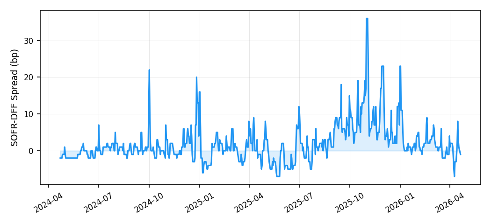
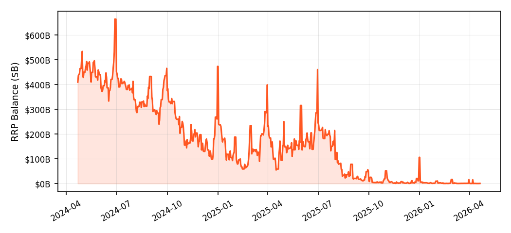
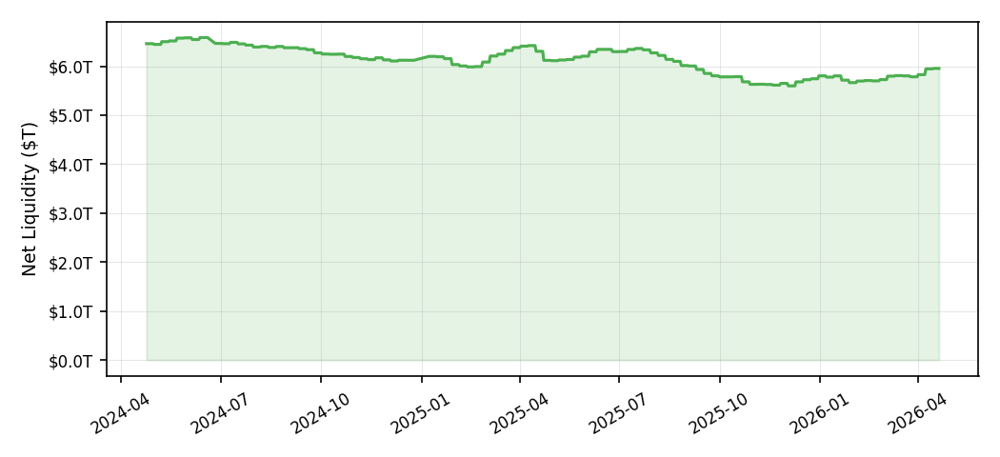
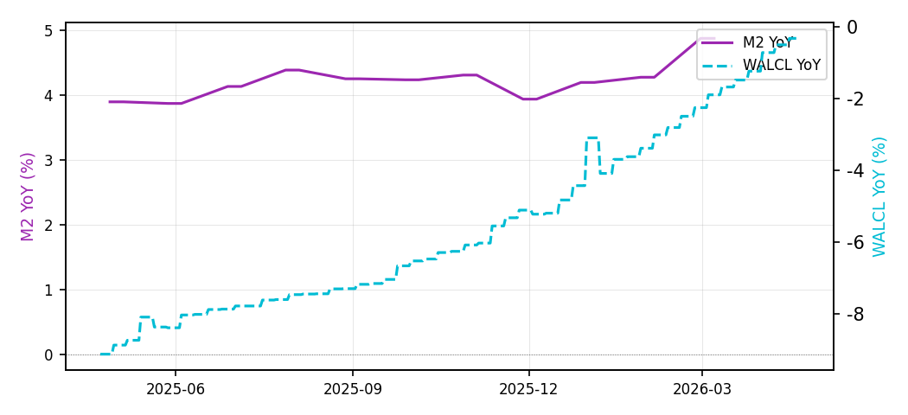
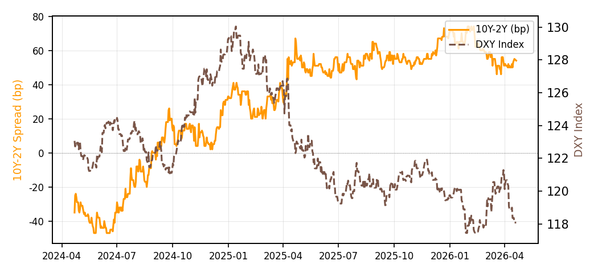
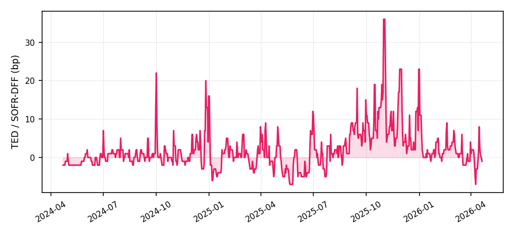

2026-W17 · 2026年04月21日 | Framework v3.1
综合评级：L1 L1 充裕（SOFR-DFF L1 · TED L1 · 净流动性 L1）
| 指标 | 最新值 | 评级 | 备注 |
|---|---|---|---|
| SOFR-DFF利差 | -1.0bp | L1 充裕 | 利差<5bp，银行间市场平稳 |
| TED利差 | -1.0bp | L1 正常 | LIBOR已停用，以SOFR-DFF替代 |
| RRP余额 | $0.00T | LNone 辅助观察 | RRP=$503M（不参与综合评级） |
| 净流动性 | $5.95T | L1 充裕 | 净流动性扩张 |
SOFR-DFF利差（当前: -1.0bp）：SOFR与有效联邦基金利率(DFF)之差，反映银行间担保融资市场的信用溢价。FRED SOFR为日均值，>50bp为2020 COVID实测危机级别。
TED利差（当前: -1.0bp）：LIBOR已于2022-01-21停用；当前以SOFR-DFF日频利差替代，不代表原始LIBOR口径TED利差。
美联储净流动性（当前: $5.95T）：美联储总资产(WALCL)减财政部一般账户(TGA)减RRP余额，反映货币政策与财政政策合力的基础流动性供给。
| 指标 | 当前值 | 评级 | 说明 |
|---|---|---|---|
| M2同比 | 4.88% | L3 收紧 | M2 YoY=4.9%，货币供给偏紧 |
| WALCL同比 | -0.32% | L3 略缩 | WALCL YoY=-0.3%，QT初期 |
| 10Y-2Y利差 | 54bp | L3 正常 | 利差54bp，正常区间 |
| 美元指数DXY | 118.08 | L4 强势 | FRED贸易加权Broad指数(DTWEXBGS)，非ICE DXY |
M2同比增速（当前: 4.88%）M2 YoY=4.9%，货币供给偏紧
WALCL同比（当前: -0.32%）WALCL YoY=-0.3%，QT初期
10Y-2Y利差（当前: 54bp）利差54bp，正常区间
美元指数DXY（当前: 118.08）DXY 116-121，极端区间
| 月份 | SOFR-DFF | R | RRP余额 | R | 净流动性 | R | M2同比 | R | WALCL同比 | R | 10Y-2Y | R |
|---|---|---|---|---|---|---|---|---|---|---|---|---|
| 2025-10 | 11bp | L2 | $0.05T | 3 | L$5.63T | 2 | L+4.3% | 3 | L-6.1% | 4 | L54bp | 3 |
| 2025-11 | 12bp | L2 | $0.01T | 4 | L$5.65T | 2 | L+3.9% | 3 | L-5.1% | 4 | L54bp | 3 |
| 2025-12 | 6bp | L2 | $0.11T | 2 | L$5.80T | 1 | L+4.2% | 3 | L-3.1% | 3 | L65bp | 3 |
| 2026-01 | 3bp | L1 | $0.01T | 4 | L$5.66T | 1 | L+4.3% | 3 | L-3.4% | 3 | L68bp | 3 |
| 2026-02 | 2bp | L1 | $0.02T | 4 | L$5.73T | 1 | L+4.9% | 3 | L-2.3% | 3 | L65bp | 3 |
| 2026-03 | 1bp | L1 | $0.02T | 4 | L$5.78T | None | L+4.9% | 3 | L-1.2% | 3 | L54bp | 3 |






SOFR: FRED SOFR | RRP余额: FRED RRPONTTLD | 净流动性: FRED WALCL - WTREGEN - RRPONTTLD | M2同比: FRED M2SL | WALCL同比: FRED WALCL | 10Y-2Y: FRED T10Y2Y | 美元指数: FRED DTWEXBGS